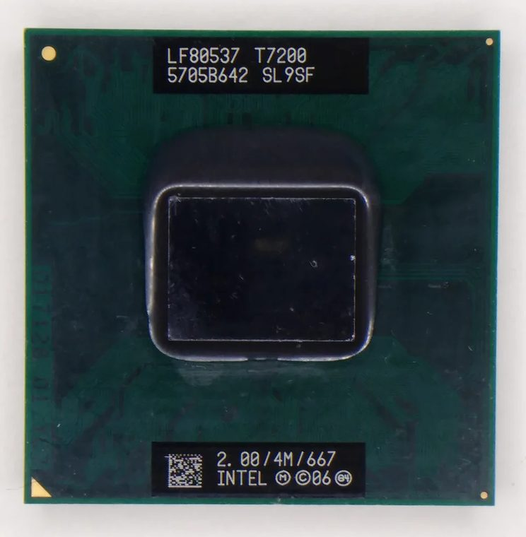

[ MOBILE AND LOW-POWER PROCESSORS // IDENTIFIED PROCESSOR ]
Intel Core 2 Duo T7200
The Merom T7200 brought Core microarchitecture and 64-bit operation to 2006-era notebooks, with two cores and shared L2 cache.

MODEL IDENTIFICATION: Intel Core 2 Duo T7200. Compare the printed part number, speed grade, package, cache configuration, and stepping with the cited documentation; do not transfer one variant’s limits to another.
Recorded specifications
| Cataloged part | Intel Core 2 Duo T7200 |
|---|---|
| Era / family | Intel Core 2 Duo mobile T7000 series / Merom, 2006; T7200 SKU. |
| Key specifications | 2 cores / 2 threads; 2.00 GHz; 667 MT/s FSB; 4 MB shared L2; 34 W TDP; Socket M mPGA; Intel 64, Execute Disable Bit, and Enhanced SpeedStep. |
| Interface / fit | Requires Socket M notebook board with a chipset and BIOS that support Merom T7200. Socket M differs from Socket P despite similar mobile packaging; check laptop vendor support. |
| Variant distinction | T7200 is a Socket M, 667 MT/s model. Do not mix its specs with the T7200 engineering sample or later 800 MT/s Core 2 mobile models. |
Compatibility and variants
- Requires Socket M notebook board with a chipset and BIOS that support Merom T7200. Socket M differs from Socket P despite similar mobile packaging; check laptop vendor support.
- T7200 is a Socket M, 667 MT/s model. Do not mix its specs with the T7200 engineering sample or later 800 MT/s Core 2 mobile models.
- Confirm the system manufacturer’s exact processor support list, firmware minimum, board revision, power/thermal envelope, and memory requirements before installation.
Service and archival notes
Preserve the laptop model, board revision, BIOS, cooling assembly, and sSpec with the CPU. Inspect fragile socket contacts and confirm chipset support before the swap.
Preserve provenance and a record of the exact marking, condition, tested board/platform, firmware, cooling, memory configuration, and test conditions. Separate published specification limits from observations made on a particular surviving system.
Sources & further reading
- Intel Core 2 Duo T7200 exact-model identification/specification cross-referenceModel-specific Merom speed, cache, and package identification.
- Intel Core 2 Duo processor family documentation — package and electrical referenceManufacturer documentation for Core 2 processor package/electrical context; the cited part’s mobile-specific details are identified separately.
- Intel processor history archiveHistorical context for Intel processor development; not a substitute for the model data sheet.
- Various Creators — Retro Review: Dell Inspiron i6400 15" Laptop (Core 2 Duo T7200)Independent video review; treat as supplementary context, not primary manufacturer documentation.
Third-party reference pages and document archives are finding aids. The matching manufacturer datasheet, product specification, and board support documentation take precedence for the exact revision and host.